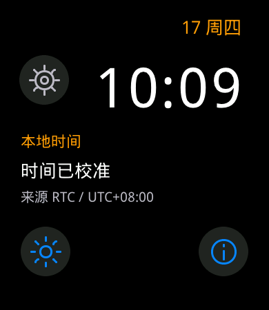
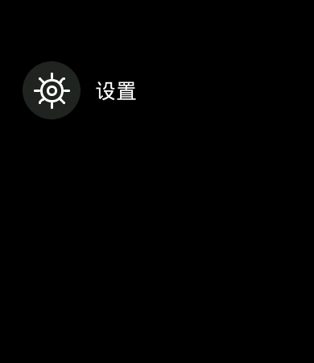
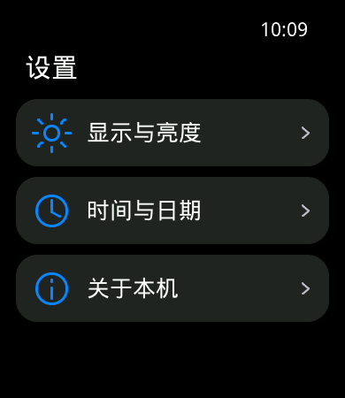
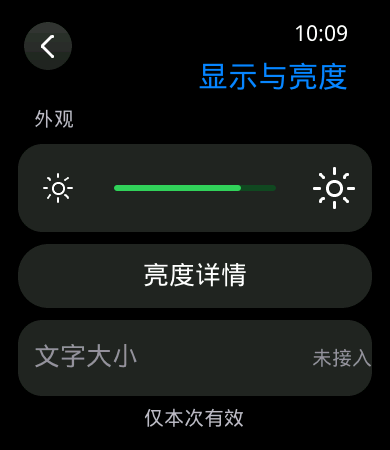
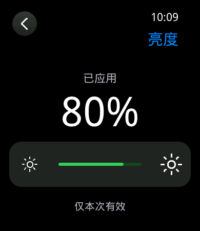
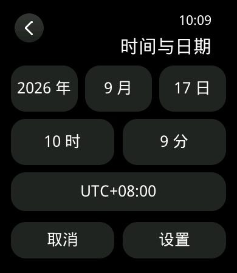
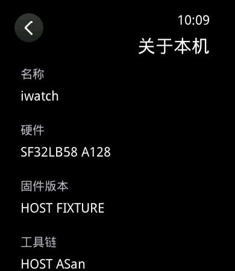

D10 首批七页实施记录
当前状态
D09 已按审批基线 042ba6f、固件源码 05fb667 收口。D10 七页、路由与服务接入已实现；源码 2e89117 的历史实机记录保留在下文；本轮 cd8c6e7 增量板测见复核交接。增量源码 cd8c6e7 补齐选择器拖动吸附、大字号重排及绘制批次采样，见界面完善与复核交接。跨页动效降级与性能测量边界单列；显示异常 #10 和 Issue #12 保持打开，等待架构复核。
| 范围 | 状态 |
|---|---|
| 校时草稿、格式化、亮度数值映射 | 已接入真实服务，包含校时冲突重试、亮度预览合并与最终提交。 |
| 七页文案与正式字体 | 已加入正式清单并生成，字体校验与既有绘制回归通过。 |
| 七页 View、路由、命令结果 | 已实现。开机进入 iwlist，KEY1 在列表根页与数字表盘之间切换，列表只展示已接入的设置；新页面已登记全局故障回收。 |
| 目标构建、实机与视觉验收 | 增量源码 cd8c6e7 的 GCC/Keil 构建、身份、预算及 DryRun 通过；GCC/Keil 已完成构建与身份校验，GCC 已通过 COM9 刷入并完成“未接入”与校时相关页面抽查。详见增量交接，跨页转场降级与性能测量边界等待架构裁定。 |
编辑模型与所有权
iw_settings_model 是无堆分配的纯 C 模型；iw_product_scene 使用固定 48 项节点并复制文本；iw_product_view 负责裁切、绘制、命中与滚动。iw_product_controller 读取服务、维护草稿并发出导航请求。LVGL 操作仍限定在 app_watch 线程。
- SET_CLOCK 携带 expected_revision；字段编辑候选值与草稿分开。冲突保留页面，明确点“重试”后重读快照，成功按来源返回。Home 丢弃离开的编辑页。
- 无效 RTC 使用 2026-01-01 00:00、UTC+08:00 作为编辑起点，并保留 needs_calibration；表盘与顶栏仍显示真实快照，无效时间显示 --:--。
- 本地编辑年份覆盖 1999～2100，以承接 UTC 两端与 ±14 小时时区的跨年值；提交仍受时间核心 UTC 2000～2099 范围限制，秒归零。
- 月份切换不偷偷修正日期：2 月 31 日保留并返回非法日期，星期标记为无效；修正为合法日期后重新计算星期。时区以一分钟为步长，UTC+08:07 不丢精度。
- 转换或初始化失败不修改目标值；字符串缓冲不足时清空可写输出。字段步进用 64 位中间值处理 int32 极值。
- 亮度轨道相对坐标 96～258 映射 5～100。预览最多 20 Hz，只保留一项尚未提交的新值，FINAL 优先于旧预览；稳定状态展示 applied，等待状态展示目标。
- 全局命令客户端 有 8 个固定槽，不保存页面指针；退出只解除结果消费，已受理命令继续查询与 ACK。GUI 与诊断共用运行时请求号分配器。两秒未取得结果显示“正在确认结果”，仍可退出；若服务永久无响应，槽保留至结果或 session 更换，容量满后拒绝新请求，不伪造失败或成功。
- 全局故障等待 GPU/LCD 空闲后停止作用域、删除页面、释放字体，根页以新 generation 重建。关于页显示提交、实际输入摘要与工具链；构建 finish/verify 验证 main.bin 含该身份，头文件随归档保存。
正式字体及文案
七页正式文案已绑定到 font_charset.json。沿用 DroidSansFallbackRegular 及既有 11 种字号，保留十条旧通知文案，补齐施工定稿文案表涉及的 53 个缺字。
| 项 | 本地 D10 结果 |
|---|---|
| 字符数 / 字体大小 | 336 → 389；56,804 → 65,752 B，增加 8,948 B，低于 131,072 B 上限。 |
| 字体 SHA-256 | 7cd5c22db298bbf726b1afa9e52f1ecf4c8c61e65683a4c911b211a377661919 |
| 构建阻断 | 继续使用正式字体、清单及输入文案校验；新增测试检查定稿中文条目全部出现在编译文案，并验证遗漏字符会拒绝校验。 |
| 资源边界 | 本项只证明字体文件容量；目标 main 大小、主堆、PSRAM 字形池峰值与反复进入后的趋势仍需分别测量。 |
受控 SDK 补丁从 29 文件扩至 31 文件，新增横/竖/斜线遮罩分配判空、失败通知及圆端受控填充。回调只锁存故障，不在绘制中删除对象；全局断言和缓存同步保留。补丁 SHA-256：52b18a9f4f107962121c2f692c434141c090979658d894da8728eba08381b506，基础 SDK 仍为干净的 421126d9…。
接入及验收约束
- 按视觉施工定稿 v2实现七页共用的顶栏、列表行、亮度控制和校时选择器。数字表盘、应用列表、设置、显示与亮度、亮度详情、手动校时、关于页使用同一套运行 View 进行主机渲染。
- 沿用 D08 页面作用域、SDK 页面栈和 D09 输入仲裁，补齐来源相关 Back、绝对 Home、滚动恢复以及选择器子态。新增字体使用方必须登记全局故障清理；GPU/LCD 未空闲不得回收。
- 接入真实时钟、亮度与 capability 快照。命令结果由有界的全局客户端收取并 ACK；页面销毁后仍回收结果，旧 generation 不更新新页面。预览合并、最终提交、revision 冲突、队列拒绝和超时分别处理。
- 完成主机回归，再生成 GCC/Keil 新归档，验证身份、预算、地址与 DryRun 后进行新固件实机验证；按 V01～V08 分别记录布局、状态、导航、字号、能力缺失、Q0/Q1/减弱动效和反复进出。
禁用能力显示不可用，不创建虚假的联网、健康或持久化结果。会话亮度仍标注“仅本次有效”。关于页使用真实构建身份，缺失项显示未提供。
本轮验证与未完成项
| 证据层 | 结果 |
|---|---|
| 主机模型 | 146,100 次日期/时区往返、1000 轮编辑、命令 ACK/离页/session 回归通过；核心脚本 46 项 Python 检查，其中一项环境跳过。 |
| 主机真实 View | 37 个构造失败点、47 个绘制任务失败点、15 个实际画线分配失败点；1000 轮七页生命周期、1000 轮控制器、1000 轮路由/故障恢复通过。真实 pointer 单击、取消、拖动和最终提交通过。 |
| 既有回归 | 字体、组件、输入溢出、SDK 路由及 4046 次像素对照通过。GUI 脚本 38 项 Python 与核心脚本有重叠，不相加。主机采用全量包装脚本，避免本机 Ninja 本地化依赖输出导致旧头文件对象混用。 |
| 首版目标（历史） | 源码 062889f：GCC 1,909,772 B（30.355%）、Keil 1,834,800 B（29.163%）；两套身份/预算/DryRun 通过。TTF 65,752 B、位图字体 51,335 B、链接图片 866,577 B。 |
| 首版实机（历史） | 2026-09-18 已通过 COM9 写入首版 GCC 三件套并完成写后校验，完整输出保存为本地归档中的 flash-gcc.log。CO5300 / FT6146 识别，新列表/表盘切换、亮度及返回人工确认正常；首次校时字段灰色，实机验收未通过。timeline.jsonl 的 flash_verified 事件记录预烧录原始数据边界为 463 B，此前旧固件内容不可算作 D10 板测。 |
本地日志：work/d10-core-final.log、work/d10-gui-sdk-final.log（仅本地可用；本轮归档位置见下文）。复现使用 核心脚本与 GUI 全量脚本，后者包含产品矩阵。
首次校时整改（源码 2e89117）：冷启动 RTC 存在但无有效时间，CLOCK / RTC_BACKUP 均为 DEGRADED。页面只接受 AVAILABLE，误禁用了首次校时。主机以相同状态复现禁用断言后，改为两项能力均处于 AVAILABLE 或 DEGRADED 才允许校时；UNKNOWN / ABSENT / FAULT 仍禁止。新增实际控制器首次设置、ACK 和 25 种能力组合，完整 GUI 回归通过（work/d10-cold-clock-repro.log、work/d10-cold-clock-host.log，仅本地）。修正版 GCC 1,909,804 B、Keil 1,834,832 B，身份、预算、DryRun 通过；两套归档位于本地 cold-clock-fix 子目录。修正版已通过 COM9 写入并完成首次校时实屏复验，结果见下文；没有沿用首版镜像验收身份。
首版内存样本分开记录：首次启动仅有 iwlist，主堆 43,676 B、字形池 1,432 B、字体引用 2；打开表盘后返回列表，后台仍保留 iwface，主堆 80,684 B、字形池 45,972 B、引用 7。两种页面所有权不同，不能直接判为泄漏或声称返回启动值，仍需相同状态的重复采样。亮度操作第一次返回时最终值为 48，157 项命令后又为 100；均以原始日志为准，不写成精确的 20/80 样本。
首版包位于 logs/board-validation-20260918-d10（仅本地），两套 main.bin SHA-256：GCC 982df25773e38574b563fb5f6f5fe2a69e9f189b209b70429fa5cb206812b062；Keil 7abedd4b8b8532377c019cf01fbefea99578496e04754a06e72d4f5280a7b343。源码提交为 062889f1fe2a8d181845e030b632ad7ac20a8f3c。
120 个同源样本与哈希涵盖七页 × Q0/Q1 × 正常/减弱动效 × 正常/放大正文，另含校时六字段和关于页底部。固定数据 VIS-FIXTURE-01 只用于主机，不作为 RTC 或实屏证据。







- 跨页仍为无快照稳定切换，250/290 ms 目标按定稿降级条款登记 V-DIFF-08；字段 190 ms 吸附已在 fdd6067 实现。按压 75 ms、圆入口缩放及减弱动效已接入；Q1 仅返回圆局部高光。
- fdd6067 已补大字号校时双列重排、滚动时区和关于页真实字体换行；全局字号设置仍禁用，工程 profile 不冒充用户功能。
- 增量实屏结果及绘制批次测量见复核交接；不把主机状态矩阵替代实屏验收，不把空闲轮询或输入延迟当成面板 FPS。
2026-09-18 七页基本操作与首次校时整改复验
当前板上源码 2e891170bbddb7699d562f7a73c2cbf238bf4069。GCC main SHA-256：cdd312db7c7ac244ca2d51f896f8bfcaf0405c3fe08a20f25b4864b6c971800d；Keil：29aad321e8bd8689947e6b708cd6aa160d576ac7c21ed0bf3ab8a9588b951325。两套构建、身份、容量、DryRun 通过，仅 GCC 实际写入并校验。首版三件套和修正版三件套分别保留，不混用证据。
| 层次 | 结果与边界 |
|---|---|
| 主机 | 灰色校时字段已复现并修复；首次校时与 25 种能力组合通过。完整 GUI 回归、1000 轮控制器/路由与故障清理、37 个构造失败点、47 个绘制失败点、15 个画线失败点通过；112 张重新渲染帧与归档一致。核心 46 项 Python 检查中两项环境跳过，随后在 FontTools 环境和两套归档完成后单独补测通过。 |
| 实机人工操作 | 校时字段可编辑；修改后取消并重进未保留草稿。首次从页面提交后表盘显示有效时间；关于页构建身份、滚动、来源相关返回、亮度调节和触摸人工确认正常。没有要求拍照，因此不将人工确认称为像素级实屏对照。 |
| 时间与结果 | 取消后 valid=0、submitted=0；首次页面校时后 valid=1、offset=480、revision=2、source=MANUAL，submitted/completed/ack=1/1/1、ledger=0。后续混合操作结束为 39/39/39；软件 reboot 后 session 995903079→995903080、时间从 RTC 恢复。未执行断电保持或亮度持久化验收。 |
| 重复进退 | GUI 邮箱依次完成设置、显示、亮度、校时、关于及 Back，共 10 轮。11 个同状态根页样本主堆均 103,084 B、字体引用均 15；字形池从 42,268 B 预热后为 43,556～43,812 B，未见持续增长。该状态包括后台页面，不能与单应用冷启动直接比较。首次脚本因当前仍是设置页而拒绝采样；经路由返回列表后重跑，失败前置检查也保留。 |
| 清理与恢复 | 命令 6 的 owner_cleanup_only 诊断释放全部 15 个字体引用，字形池回到 72 B；人工确认应急层、KEY1 返回和重进正常。这不等同实机真实堆耗尽。软件复位后的单应用基线再次为主堆 43,676 B、字形池 1,432 B、引用 2。 |
| 输入及性能 | 修正版采样窗口触摸 overflow=0；清理前实体输入队列 10 个样本，P95/max=0 ms。这是少量按键入队统计，不是绘制帧率或长文性能结论。#8 的历史 215 ms 等记录继续保留。 |
| 显示异常 | 软件 reboot 后先读到有效 CO5300 ID，随后出现 draw_core timeout、清理驱动状态和 recovery attempt 1，再经 PowerOff/PowerOn 重新识别并显示。日志计数 recovery=1，用户确认当前画面和操作正常，未单独说明瞬时启动画面。此证据仅证明一次恢复，不证明根因已修复，也不能将其直接等同早先半黑半白的同一原因；关联 #10 继续分析。D10 整体暂不收口。 |
封存目录 logs/board-validation-20260918-d10 仅本地可用，含两轮烧录完整输出、首版与 cold-clock-fix 双工具链归档、自动进退脚本和原始串口。serial-raw.bin 为 299,076 B，SHA-256 37c3bfb306313b599ff8108939f98c36305e62f37e252be014c33ea97e43137b；timeline.jsonl SHA-256 77f9b4fafbdf280e05534a4659459b8c07131e7fa7ab8a5a48756d7ddb5e46f6。采集偏移连续性通过；这只检查已接收数据内部连续，不保证 USB 复位期间绝不丢字节。原始偏移 0～462 为旧固件，463 起为首版，72,186 起为修正版烧录之后的数据。
#8 继续保留历史最大 215 ms、D09 最大 133 ms 和六次触摸溢出；#10 未定位的显示异常仍打开。页面成型后独立记录首帧、帧间隔和停顿，不以输入队列延迟代替帧率。D10 Issue #12 保持打开。